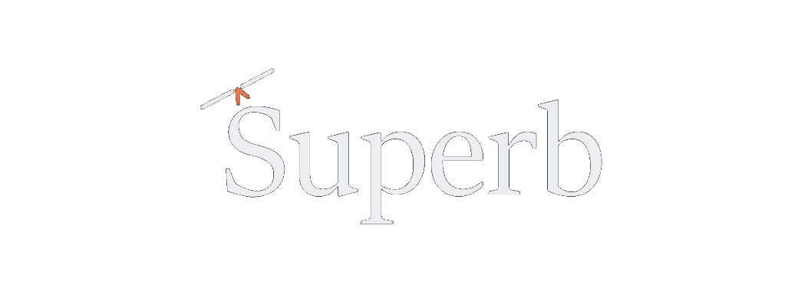

Superb hands you something worth finishing, then keeps every word that trips you up. Tap it once — it comes back until it’s yours.
No account. No streak guilt. Your reading state stays on this device.Your place is saved as you scroll. Ordinary reading records nothing beyond that and the words you choose to keep.
Search all 614 by title or author, or browse by kind.
Every kept word waits with its meaning and the sentence it was met in.
An orb reads to you in your device’s own voice.
Install it from the browser menu. A book once opened reads with no connection at all.
No account, no tracking, no analytics. Your shelf, your places, and your kept words live in your own browser’s storage — the only thing the app ever fetches is the book you asked for.
connect-src 'self' + the book library. That’s the whole policy.